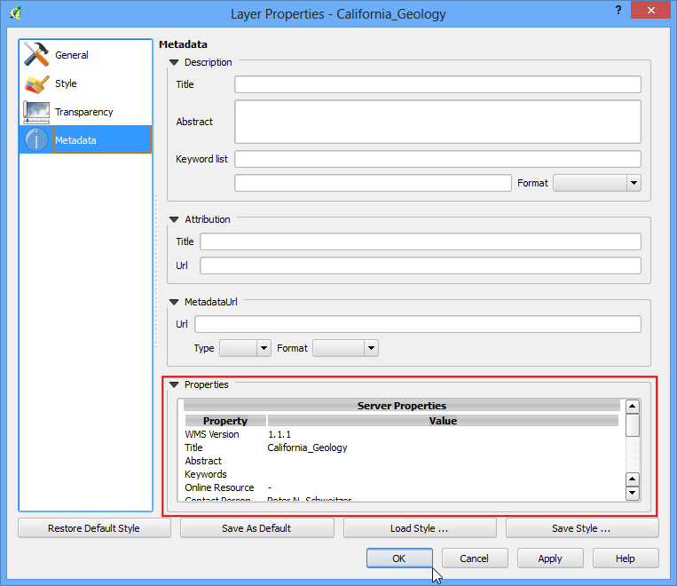

WMS 데이터 작업
[ Download PDF A4 Letter ]
종종 베이스맵을 위한 레퍼런스 데이터레이어가 필요하거나 다른 데이터셋에 결과를 표현할 때가 있습니다. 많은 기관이 GIS에서 즉시 사용할 수 있는 온라인 데이터셋을 게재합니다. 온라인에서 지도를 표현하는 가장 일반적인 표준은 **WMS (Web Map Service)**입니다. GIS에서 데이터를 다운로드 혹은 스타일링할때 어려움 없이 풍부한 데이터셋에 접근하는 방법으로 레퍼런스 레이어를 사용하는 것이 보다 나은 선택입니다.
과정
QGIS를 구동시키고 메뉴 레이어 –> WMS레이어 추가 :menuselection:`Layer –> Add WMS Layer...`로 갑니다.

레이어 Layers 탭에서 새로만들기 :guilabel:`New`를 클릭합니다.

연결상세에 이름을 입력합니다. 여기서는 레이어 이름이 아닌 WMS 레이어를 제공하는 서비스명입니다. 일반적으로 하나의 서비스가 프로젝트에 포함될 수 있는 다중 레이어를 제공합니다. WMS 레이어에 접근하기 위해 필요한 URL은 *GetCapabilities*라고 불립니다. URL에서 이 매개변수를 가진 WMS에 접근할 때 사용가능한 레이어의 목록을 다양한 메타데이터와 함께 보여줍니다. 이 예제에서는 ``MRDATA USGS``라고 연결상세 이름을 입력하고 GetCapabilities URL은 ``<http://mrdata.usgs.gov/services/ca?request=getcapabilities&service=WMS&version=1.1.1&>``를 입력합니다. :guilabel:`OK`를 클릭합니다.

다음, 사용가능할 레이어 목록을 가져오기 위하여 연결 Connect 단추를 클릭합니다. 레이어 다음에 다른 ID목록을 보게 될 것입니다. ID ``0``은 모든 레이어를 얻을 수 있음을 의미합니다. 모든 레이어를 원하지않으면, 플러스 :guilabel:`+`아이콘을 클릭하여 목록을 확장할 수 있고 찾고자 하는 레이어를 선택할 수 있습니다. 이 예제에서는 레이어 ``0``을 선택합니다.

이미지 인코딩 Image encoding 부분에서는 이미지 형식을 고릅니다. 이미지 형식은 각자의 상황에 따라 선택합니다. 주요점은 다음과 같습니다.
질: PNG는 손실없이 압축되는 이미지 형식입니다. JPEG는 손실이 생기는 이미지 형식입니다. TIFF는 둘 다의 경우가 될 수 있습니다. 이 의미는 PNG이미지의 질이 JPEG에 비해 보다 낫다는 것입니다. 만약 주 목적이 지도를 인쇄하는 것이라면 PNG를 사용하십시오.
속도: PNG 이미지가 압축 해제되고 그래서 보다 큰 크기를 갖게 되므로 로딩속도가 더 걸립니다. 프로젝트에서 참고 레이어로 레이어를 사용한다면 확대/팬을 많이 할 필요가 있다면 JPEF를 사용하십시오.
고객 지원: QGIS는 대부분의 형식을 지원합니다. 그러나 웹 어플리케이션을 개발한다면 브라우저는 일반적으로 TIFF를 지원하지 않습니다. 그래서 다른 이미지 형식을 선택해야 합니다.
데이터 형식: 레이어가 주로 벡터라면 PNG가 보다 나은 결과물을 만들어 줄 것입니다. 이미지 레이어에서는 JPEG가 일반적으로 좋은 선택입니다.
이 예제에서는 이미지 형식으로 :guilabel:`JPEG`를 선택하십시오. 원한다면 레이어 이름 :guilabel:`Layer name`을 바꾸고 추가 :guilabel:`Add`를 클릭합니다.

QGIS 캔버스에 레이어가 나타나는 것을 볼 수 있을 것입니다. 다른 레이어처럼 확대/팬 기능을 사용할 수 있습니다. WMS 서비스가 작동하는 방법은 매번 확대/팬을 사용할 때 서버에 좌표를 보내고 그러면 서버는 고객에게 좌표에 맞는 이미지를 만들어 다시 표현해 줍니다. 그래서 확대를 한 후에 이미지 구현 시각이 조금 지체되는 것입니다. 또한 구현된 데이터가 이미지이므로 정규 벡터/이미지 레이어처럼 속성을 조회할 수 없습니다.

그러나 레이어에 관한 메타데이터를 볼 수는 있습니다. 레이어 마우스 오른쪽 클릭을 하고 속성 :guilabel:`Properties`을 선택합니다.

속성 Properties 다이알로그가 기존의 레이어 것과 다르고 탭도 몇 안되는 것을 알 수 있습니다. 메타데이터 :guilabel:`Metadata`탭으로 가면 WMS 서비스와 레이어에 대해 좀 더 알 수 있습니다.
